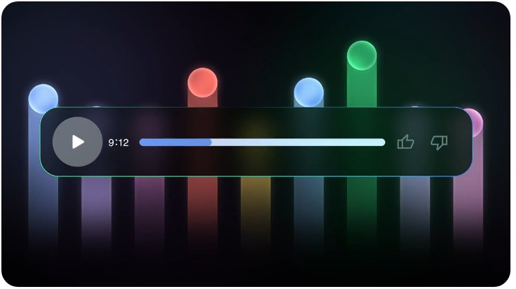

Session 2 • NotebookLM · inside the tool
One click, four study assets

The real Studio buttons — Study guide, Briefing doc, FAQ, Timeline. One click each.
- Study guide — key topics, terms & short-answer questions.
- FAQ — likely questions, answered with citations.
- Audio overview — podcast-style revision on the go.
- Briefing / notes — condensed summaries, timelines, mind maps.
Ask in chat for more: flashcards, a 7-day study plan, viva questions with model answers.
Session 2 • NotebookLM · inside the tool
Ask your documents, get cited answers

A real grounded answer — the highlighted phrase links straight back to the source passage.
definitionDefine 'normalization' exactly as this document explains it, then give the example it uses.
gap finderList anything in the syllabus PDF that is NOT covered in my class-notes PDF.
Always click the citation to check the passage before you memorise it. NotebookLM also tells you when it cannot find something — that's a real gap.
Session 2 • Hands-on · Task 2 in the tool
Where each output comes from
Outputs 1, 6, 8 — summary, revision notes & learning outcomes start from Study guide / Briefing doc.
Outputs 2–5, 7 — concepts, simplified terms, MCQs, flashcards & viva questions: ask in chat, verify the citations.

Outputs 9–10 — generate the mind map in Studio; use the Audio overview while following your 7-day plan.
Real NotebookLM screens — Studio for one-click assets, chat for everything custom, audio for revision on the go.